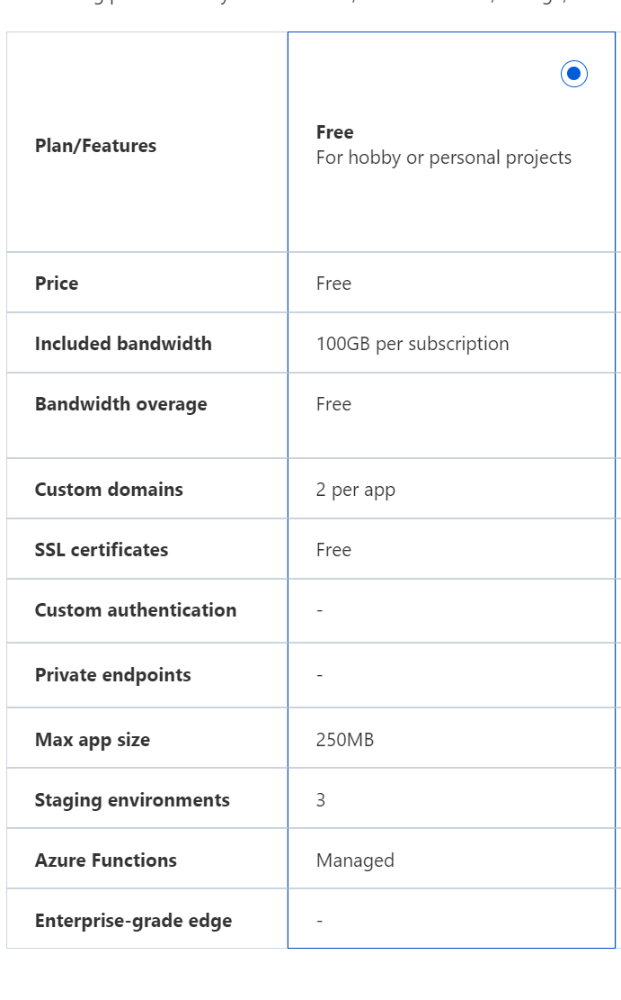

| Probeer bij het bouwen van jouw
oplossing toekomstige scalability & high availability in het achterhoofd te houden.
Kies voor de meest kostefficiënte oplossing en bereken tevens wat het zou kosten om de website
gedurende één maand te laten draaien. |
Statisch site eist geen vertitale, horizontale scaling. Loadbalancer zou kunnen indien plots request te groot worden. Requirements eisen geen uitbreidbaarheid naar application container. Basic plan voor static web is genoeg. Gekoppeld aan github, dit voor een beter versioning van CV doc |
 |